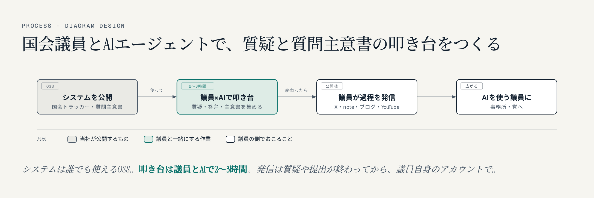
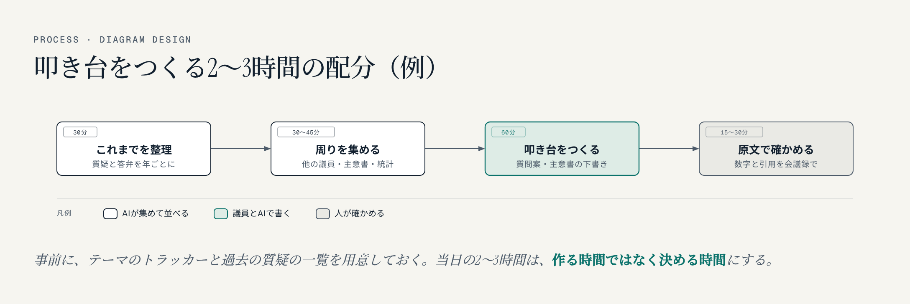

国会議員のAI活用：AIエージェントで、質疑と質問主意書の叩き台を2〜3時間でつくる——すべての国会議員へのご提案
名古屋でAIシステムの開発をしている小嶋です。国会の会議録や質問主意書を扱うシステムを作ってきました。この記事は、すべての国会議員と議員事務所の方への提案です。
議員とAIエージェントで、国会の質疑や質問主意書の叩き台を一緒につくり、その過程を議員自身が発信する。この提案には、目的が2つあります。
提案の中身を18秒で見られる動画です（音はありません）。
1. この提案の2つの目的
- 目的1：AIエージェントを使いこなす議員として示す。議員がAIエンジニアとAIエージェントを活用して国会対応の仕事をする姿を発信し、「AIエージェントを使いこなす議員」というイメージを浸透させます。
- 目的2：国会対応の仕事を速く、深く。過去の質疑・答弁・質問主意書の下調べと叩き台づくりを、AIエージェントで短い時間で、より深く行います。
効率化だけが目的ではありません。議員がどんなシステムを使い、どう考えて国会の仕事をしているのかを、有権者に見える形で伝えること。それ自体が、この提案のいちばんの目的です。
2. 使うシステムは、すべてオープンソース
使うのは、当社が作って公開している3つのシステムです。コードはGitHubでMITライセンスで公開していて、どの議員も、どの事務所も、同じ条件で使えます。
- 国会トラッカー：テーマごとに、全国の国会議員の質疑と政府の答弁を、国会会議録から集めて並べます。年ごとの件数や、議員ごとの記録、質問と答弁を1枚にした画像も出ます。いま137テーマを公開しています。
- 質問主意書アシスト：衆参の質問主意書と政府の答弁書を、本文まで検索できます。1947年からの23,333件が入っています。
- 国会議員 発言ログ：全国の国会議員711人の2023年からの質疑を、日付と会議名つきで引けます。
この3つをAIエージェント（Claude Code）から使うと、「このテーマで、これまで誰が何を聞き、政府は何と答えてきたか」を、数分で並べられます。
3. 企画の流れ

- 1つのテーマで試す：議員が国会で続けて取り上げてきたテーマを1つ選び、議員と一緒に叩き台をつくります。叩き台なら、一緒に2〜3時間の作業でできます。
- 終わってから公開する：質疑や質問主意書の提出が終わったあとに、議員自身のX・note・ブログ・YouTubeで「どう作ったか」を発信します。記事の下書きは当社がお手伝いします。
4. 2〜3時間で、何をどこまでつくるか

たとえば次の配分で進めます。
- 30分：これまでを整理する。その議員がこのテーマで国会で何を聞き、政府は何と答え、何が変わっていないかを、年ごとに並べます。
- 30〜45分：周りを集める。ほかの議員の質疑、関係する質問主意書と答弁書、公表されている統計や海外の制度の資料を集めます。
- 60分：叩き台をつくる。次の質疑の質問案と、質問主意書の下書きを、AIが案を出し、議員と一緒に直していきます。
- 15〜30分：原文で確かめる。数字と引用を、会議録と答弁書の原文で一つずつ確かめます。
事前に、選んだテーマのトラッカーと、議員の過去の質疑の一覧を当社で用意しておきます。当日の2〜3時間は、作る時間ではなく、決める時間にします。
2〜3時間で終わらないものもあります。質問主意書の言葉を最後まで詰めることや、事務所や党の中での確認は、そのあと事務所で行います。叩き台は、あくまで出発点です。
この企画を考えたのは、この数日、議員のXの投稿に国会の記録を添えて返信するために、新しいテーマのトラッカーをその場で作ってきたからです。1つのテーマの会議録を集めて公開するまで数分、使える答弁を探すのも数分でした。議員と一緒なら、そこから叩き台まで進めます。
5. あらかじめ決めておくこと
- 公開は、質疑や提出が終わったあと。質問の中身を事前に出すことはしません。
- AIに渡すのは公開資料だけ。会議録・質問主意書・公表された統計などです。陳情者の個人情報や未公表の情報は渡しません。
- AIは下調べと下書きまで。数字や引用は会議録の原文で確かめ、内容の判断と責任は議員と事務所にあります。
- 契約の形は、事務所の会計責任者とご相談のうえで決めます。会社が議員個人に作業を無償で提供すると、政治資金規正法上の寄附にあたるおそれがあるためです。当社の作業は、顧問契約などの有償の形を想定しています。システムそのものはOSSなので、誰でも無償で使えます。
6. この企画にかける思い
2026年の衆院選で、チームみらいは党員2,181人ながら、比例で381万票を得ました。党員1人あたり約1,750票で、日本保守党の約27票（146万票÷5.4万人）と比べると、桁が二つ違います（数字はチームみらいの381万票はどこから来たのかで確かめたもの）。熱心な支持者の数を大きく超える、組織に頼らない票です。「デジタルで政治が変わる」と期待した人たちの票だと、私は考えています。
ただ、その後の国会で、デジタル民主主義が大きく前進したようには、私には見えません。期待した分、物足りなさを感じている人もいるはずです。
議員の皆さんには、何年も積み重ねてこられた仕事があります。その仕事をAIエージェントでさらに深め、過程とシステムを公開する。デジタルに期待する人たちに、法案を実現できる議員と政党でこそデジタルが生きることを、示していただきたいと思っています。名古屋で国会のシステムを作ってきた者として、それを一緒に形にしたいと願っています。
よくある質問
AIが質問を勝手に作って、そのまま国会で使うのですか
いいえ。AIがするのは、過去の質疑や質問主意書を集めて並べることと、叩き台の案を出すことまでです。どの質問をするか、どの言葉で聞くかを決めるのは議員と事務所です。数字や引用は、会議録の原文で確かめてから使います。
どの党の議員でも使えますか
使えます。国会トラッカーも質問主意書アシストも、GitHubでMITライセンスで公開しているので、どの議員も同じ条件で使えます。全国の国会議員711人の発言ログも、どの議員にも同じ形で公開しています。
費用はかかりますか
システムそのものはOSSなので、使うのに費用はかかりません。当社が一緒に作業する場合は、政治資金規正法の決まりに合わせて有償の契約の形にし、契約の形は事務所の会計責任者とご相談のうえで決めます。
質問の中身が事前に外に出ることはありませんか
ありません。発信は、質疑や質問主意書の提出が終わったあとに行います。AIに渡すのも、会議録や公表された資料だけです。
議員事務所の方で、関心をお持ちいただけたら、お気軽にご相談ください。
政党・政治団体・議員事務所のAI活用のご案内 https://exbridge.jp/solution/seito.html#ref=vb-giin-ai